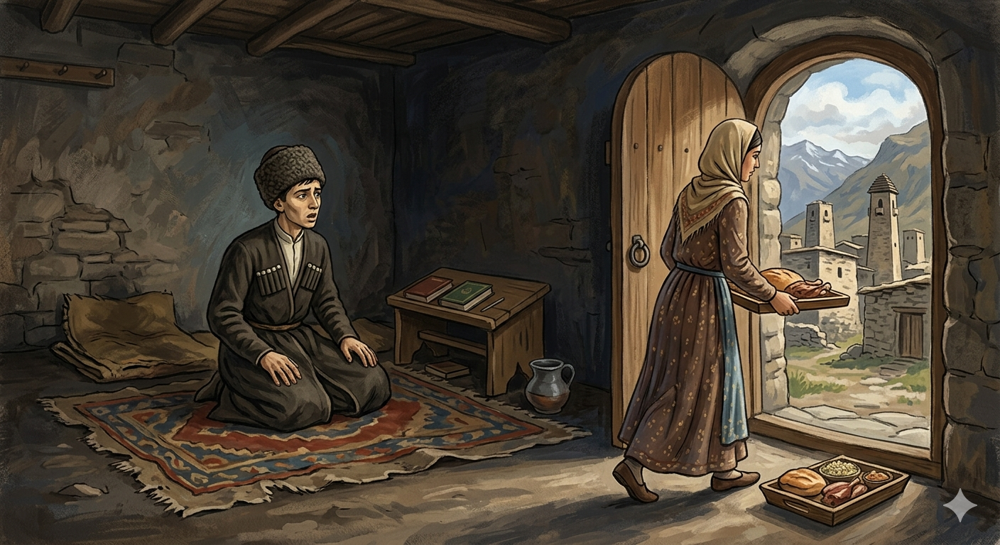

И.А. Дахкильгов. Хьехаме дувцарш - поучительные рассказы-притчи.
И.А. Дахкильгов. Хьехаме дувцарш - поучительные рассказы-притчи. Из ингушского фольклора.

КӀезига-дукха ше а тохавала веза
Хьужаре Ӏеш цхьа мутаӀаламий тоаба хиннай. Шоай хьакъаца хӀама хьа ца деш шаш хиларах мутаӀамаламаш юрта гӀолла лелаш, напагӀа дехаш хиннаб. ХӀаьта цхьан мутаӀаламо аьннад, йоах, напагӀа деха ухаргвац ше. - ХӀана ях Ӏа из иштта? - хаьттад новкъосташа. - Лийнавар-вацар аьнна, яздаьр мара хургдац, - аьннад цо. - Яздаь дале а, кӀезига-дукха саг ше а тохавала везаш ва, - аьннад цунга новкъосташа. Цхьа ди дӀадахад, шоаллагӀа ди дӀадахад. Моцалах чоажаш чукхийтта уллаш хиннав мутаӀалам. Новкъосташа хӀама луш хиннаяц цунна, из къарвар духьа. КхоалагӀча дийнахьа корта бӀогора ухаш цхьаькъа хьужаре ер уллаш, мутаӀаламашта сагӀа дахьаш ена сесаг хьачухьежей хьужаре. Цу чу баьде хиларх, чукхайкхай из: - Саг вий укх чу? Ший нигат доха ца дар духьа йист ца хулаш иллав мутаӀалам. - Укх чу-м саг вац, - аьнна, кхалсаг юхайийрзача, кхы са ца тохалуш, из дӀаяхар кхеравенна, мутаӀалам тӀехьакхайкхав: - ЦаӀ-м ва хьона укх чу. ТӀаккха наӀара юхе напагӀа Ӏо а оттадаь, сесаг дӀаяхача, хозанаьха санна яахӀама хьеккха дӀайиай мутаӀаламо. Новкъостий чубаьхкачул тӀехьагӀа аьннад цо: - Бакълувш хиннад шо. Яздаь дале а, саг ше а хила веза кӀезига-дукха тохалуш.
РУССКИЙ
Хоть немножко, но и самому надо постараться
В медресе жила группа муталимов. Поскольку они ничего своим трудом не добывали, то ходили по селу и выпрашивали жертвенное подаяние. Вдруг один из муталимов решил не ходить за подаянием. - Почему ты так решил? - спросили его. - Проси не проси, будет только то, что суждено, - ответил он. - Если и суждено, все же человек должен и сам хоть немножко постараться, - укорили его. Прошел день, затем второй. Лежит голодный муталим. От голода впали его бога. Друзья ничего не давали, чтобы проучить его. Третий день муталим один лежит в медресе. Голова его кружится от голода. В это время явилась какая-то женщина с жертвенной пищей. Заглянула она в темноту и спросила: "Есть тут кто-нибудь?". Муталим молчал, укрепляясь в своем решении о предопределенности. - Тут никого нет, - сказала женщина и только повернулась, чтобы уйти, как муталим, испугавшись, сказал вдогонку: - Есть тут один человек. Женщина оставила пищу у порога и ушла. Муталим как следует наелся. Когда вернулись его друзья, он сказал им: - Вы были правы, говоря, что если и суждено, все же человек и сам должен хоть немного постараться.
ENGLISH
Even if it's just a little, you've got to make an effort yourself
A group of mutalims lived in the madrasah. As they earned nothing through their own labour, they would go round the village begging for alms. Suddenly, one of the mutalims decided not to go begging. 'Why have you decided that?' they asked him. 'Whether you ask or not, you'll only get what is destined for you,' he replied. 'Even if it is destined, a person must still make at least a little effort themselves,' they reproached him. A day passed, then a second. The hungry mutalim lay there. His strength had failed him from hunger. His friends gave him nothing, to teach him a lesson. On the third day, the mutalim lay alone in the madrasah. His head was spinning from hunger. Just then, a woman appeared with some sacrificial food. She peered into the darkness and asked, 'Is there anyone here?' The student remained silent, steadfast in his belief in predestination. 'There's no one here,' said the woman, and just as she turned to leave, the student, startled, called after her: 'There is one person here.' The woman left the food by the threshold and went away. Mutalim ate his fill. When his friends returned, he said to them: 'You were right when you said that, even if it is predestined, a person must still make at least a little effort themselves.'
НОХЧИЙН
ПОГОВОРКИ